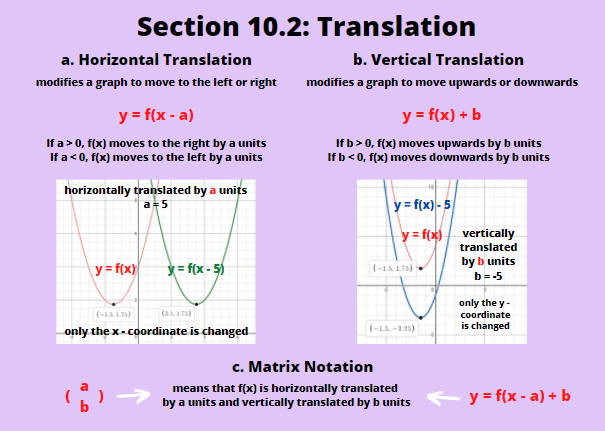
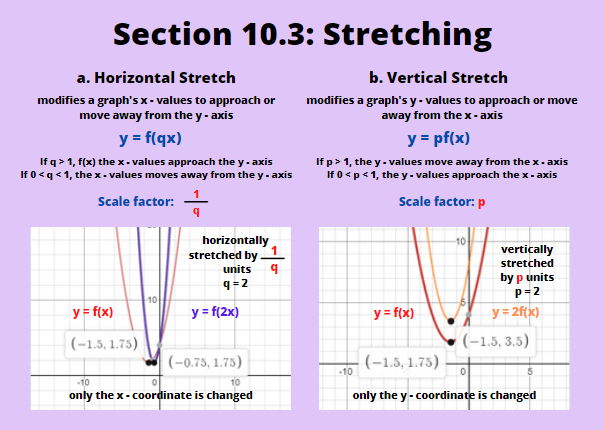
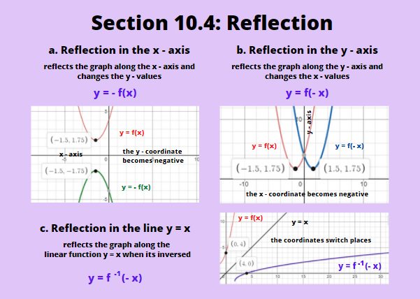

Transformation of functions is when you 'modify' your functions so that its graph, when sketched, will stretch or move several units vertically or horizontally. When a graph represents real life data, such as the decay of a chemical, transformations are used to predict when that chemical is to completely decay when some other chemical is added to speed up the decay. It helps us predict the rate of chemical decay in some branches of chemistry. In this chapter, we're going to discuss these 'transformations', what their functions look like, and how they are modelled.
A translation occurs when every point on a graph moves by the same amount in the same direction. Below, we are going to discuss the two types of translations as well as their models.
a. Horizontal Translation
The first type of translation is the horizontal translation. It moves all the points on a graph to the left (negative x - axis) or to the right (positive x - axis). It takes the form of y = f(x - a). If a is positive (a > 0), the graph moves to the right, and if a is negative (a < 0), the graph moves to the left. The distance moved is a units.
b. Vertical Translation
The second type of translation is the vertical translation. It moves all the graph's points upwards (positive y - axis) or downwards (negative x - axis). This translation takes the form of y = f(x) + b. If b is positive (b > 0), the function is moved upwards, and if b is negative (b < 0), then the function is translated downwards. The distance moved is b units.
c. Matrix Notation
Matrix notations can be used to indicate how many units a function is translated horizontally or vertically. The notation (ab) means that the graph is translated horizontally by a units, and translated vertically by b units. It also means the same with y = f(x - a) + b.
Stretching of a function can cause it to become narrower or wider. If a graph undergoes stretching parallel to the x - axis, all the x - values are increased by the same scale factor. If a graph undergoes stretching parallel to the y - axis, all the y - values are increased by the same scale factor. Scale factor refers to the number multiplied to the function that causes the graph to stretch. Similar to translation, vertical and horizontal types of this transformation are going to be discussed.
a. Horizontal Stretch
A horizontal stretch affects a graph's x - values to approach or move away from the y - axis. It takes the form of y = f(qx), in which if q > 1, the points of f(x) get closer to the y - axis. If q is a positive fraction less than 1 (0 < q < 1), then the points of f(x) moves away from the y - axis. The scale factor is the reciprocal of q. In writing down the form, you still write q, but when moving the points on the graph, you multiply 1/q.
b. Vertical Stretch
A vertical stretch affects the graph's y - values to move away or approach the x - axis. Its form is y = pf(x), where p is the scale factor, and p > 0. If p > 1, it moves the points of f(x) away from the x - axis. If p is a positive fraction less than 1 (0 < p < 1), the points on the graph moves closer to the x - axis.
A reflection makes the function appear on the other side of what is called a mirror line. A mirror line is a line of symmetry that lies between the original and the reflected function. They are usually the x and y axes, or the line y = x for inverse functions.
a. Reflection in the x - axis
The graph is reflected on the x - axis when you see the form y = -f(x), and the y - values of the function are affected and 'moved' to the other side of the x - axis. Note that the negative sign is outside of the function.
b. Reflection in the y - axis
When a graph is reflected in the y - axis, the form shows y = f(-x). The x - values of the function are affected and 'moved' to the other side of the y - axis. The negative sign is inside the function this time.
c. Reflection in the Line y = x
You can see graphs reflected along the diagonal line y = x when you graph a function and its inverse. If you forgot what inverse functions are, we've discussed that previously in Chapter 7: Composite and Inverse Functions.
Sometimes questions ask you where you can find a certain point of f(x), on its transformed function. Don't get mixed up on which transformation to apply first. Before that, remember that horizontal translation, horizontal stretch, and reflection in the x - axis are affecting the x - values, and vertical translation, vertical stretch, and reflection in the y - axis affects the y - values. If we have the form y = -pf(-qx - a) + b, applying all the transformations we discussed, here's the correct order to find a certain point on f(x), on the new, transformed function.
1. Horizontal stretch and reflection in the y - axis are multiplied first
2. Horizontal translation comes next
3. Vertical stretch and reflection in the x - axis are multiplied next
4. Finally, vertical translation is added/subtracted
If you've observed, we've followed the order of operations. We work from inside the bracket going outside, doing the multiplications/divisions (stretches and reflections) first before the addition/substactions (translation) following the brackets.